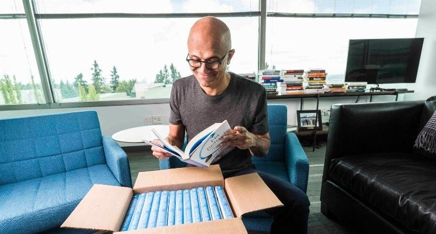
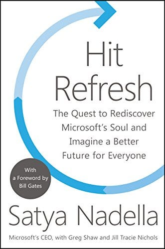

Mar 23
Hitting refresh like Microsoft

Like what Microsoft did with its new CEO Satya Nadella, sometimes we don't need a reinvention nor a revolution but a simple refresh that allows us to come back to the early simple tasks that were part of our past successes. This inflection point or turning point is not a move backward but a clear restatement of our core values and mission and a realignment of all our efforts toward guaranteeing that everything we do is compliant with these defined core values and mission.
Speed and frequency of actions are for sure important and this is more true when we are acting into the tech industry which is known for its dynamically evolving environment that can be hard navigating like an ocean in hurry or just a hurricane but if these two are coupled with a short term view, they can be very devastating. Then learning from the long term focus of amazon as a startup and the whole and long history of Microsoft could help us see that often the most effective and impactful strategies are those that are targeting goals that are set not to be achieved in a day, month, and even a year but a very long term time spot.
many startups and companies enter the devastating short-term spiral often because they go public and their managing board looks for stock prices and better quarterly results. These are two important factors for sure but the amount of value that we could produce by having a long term focused perspective rather than a quarterly hustle of making our stock price goes up is worth considering. Recall that Microsoft’s stock price was 5 USD in 1996 now, in 2022, it is 304.06 USD and amazon's stock price was 4 USD in 1997 now it is 3,297.78 USD. One with eyes set on short term view and fast round comparison could for example directly assess from my last sentence that amazon is 10X Microsoft but we should take into account the contribution of Microsoft's effort in software and its effort of making personal computers accessible to humankind on the success of what is now the superstore of the world wich is leveraging the technical infrastructure that supported its operations for competing with Microsoft in cloud services. That’s how things work sometimes, the effort we make to succeed enable the success of other and this fact was the topic of my first article published here in medium December 2018 and entitled what doors are left open by big digital giants and today I could add that each tech company almost always open doors for others to contribute. This seems to be the core purpose of Microsoft which is imagining and building technological solutions that enable others to make their best contributions and works. Put simply Microsoft is engineering a set of tools that ease the works and life of other people and organizations. Hitting refresh helped Microsoft recall that it is an enabler of solutions, ideas, and even cultures not only a software company and I think that this Microsoft strategical refresh is a lesson that every organization small and big should and could imitate and even people like you and me.
For my part trying to apply this ‘refresh’ strategic thinking helped me rediscover my past successful habits and interest and I am going out of topic by sharing this remembering that helped me realign my personal strategy and actions toward what I really want to achieve.
my past successes were about long hours of focus on studying science and liking it, particularly math and physics then computers entered my life just at the end of the 80s and amplified this interest in science opening for me the opportunity to learn programming languages like Pascal, DHTML and then javascript. But three almost simultaneous events that happened in 2002 changed clearly my life and my feeling about the world around me taking away almost all the emotional sense and sociability that I was nurturing inside of me. My high education journey and my journey in some french companies have not helped me recover this sense of emotion and sociability but my many years of entrepreneurship fuelled by ideation, experiments and my born interest in reading every kind of book spotted as interesting helped me recover this emotional sense and helped me socialize with people from different culture what improved my empathy then Thank you I should say to the internet if it was a human being standing here in front of me because, without it, my life would be more complicated. science without emotions could lead to destructive actions and solutions. Hitting refresh helped me redefine myself and rediscover the value that made my past successes which are curiosity, learning, experimenting, care, and sharing with others interesting ideas and solutions. This is what ignited this blog that I am holding and feeding since 2018 and this is at the core of the entrepreneurial journey that I am now willing to trade with a meaningful career in a big tech company like Microsoft or an amazing game studio because I want the sharing to not be only in the digital form like this blog article but also inside a team of amazing people executing a plan for achieving shorts and long terms goals but the long terms goals are of more value in my point of view.
You also could make a pause and see if it is opportune to hit refresh because it is likely that hitting refresh could make you more productive at reaching your goals both professionally and socially.
PS: By the way please know that I have not actually read Satya's book Hit refresh but I will definitely read it and advise you to do the same. Forgive me if this article sounds like a cover letter targeted at Microsoft but what I have stated in it is really what I believe as true but I may be all wrong.
